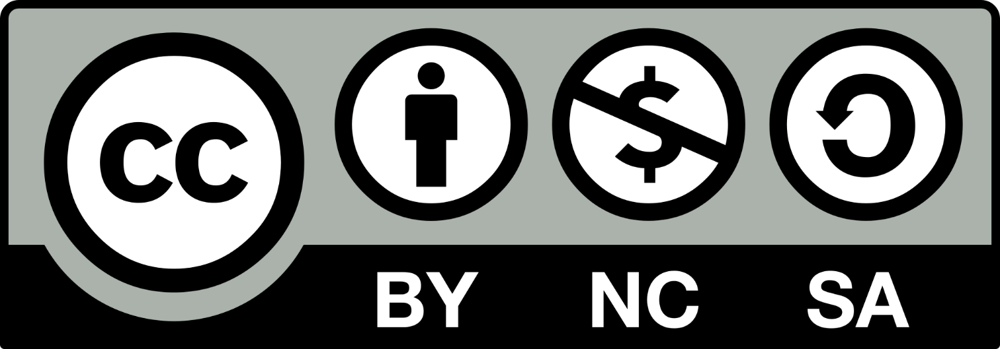

The Taiga is vast and dangerous. May this map help you, newcomer.

- Siin of the Alder, Hanai Shaman
The Taiga, also called Qaqtwm'baq (IPA: /kak'tum bak/) (lit. "cold land") by the Hanai, is the valley where the Three Tribes live. Its harsh climate and long, dark winter discouraged many from settling in here
Attached to the Core Spine are three Lifts, each named after one of the seas around the European continent (humans love their homeland, or so I am told), which lead to the Inner and Outer Rings. The Rings are two concentric cylinders of 46m and 50m radius respectively, rotating around the Core Spine with an angular velocity of about 0.419 rad/s. This speed is kept constant in order to have an acceleration that corresponds to roughly 0.89g in the Outer Ring and 0.82g in the Inner Ring. This lowered gravity should be enough for humans to maintain their bodily functions minimally impacted.
Both Rings are hermetically sealed to preserve the simulated atmosphere inside them and allow the crew to live inside without wearing a spacesuit. Around 17'500m2 of water are contained in two reservoirs, a swimming pool and a pond. Humans also love water, beyond their biological needs.
More small thrusters are installed around the Outer Ring, mainly used for steering and decelerating in case of emergency. Due to the nature of the Promise Project, its fuel tanks are very limited in capacity, allowing only for minor changes of course or velocity. The complete route has already been planned along the Second Grand Planetary Tour, and there will be minimal need for course changes.
The Promise Project is the first large-scale space program conducted by Frontier Corporation. Taking advantage of a particularly favourable configuration of planets at the end of the 21st Century, the Second Grand Planetary Tour, it features the outward travel and return of the spaceark Cyclica and its crew.
Cyclica’s first mission is a tentative run of a generational ship, in order to test the frontiers of technological development and space travel before venturing into other star systems. Most of the equipment inside the ship has been built with the purpose of sustaining human life for several decades, from basic needs to entertainment and mental wellbeing.
The Simulacrum Protocol technology for conscience transfer to new, synthetic bodies (the simulacra) has so far only been tested on isolated individuals and for limited amounts of time. In order to avoid generational issues, such as forcing the crewmates’ offspring to live in an environment they didn’t choose for themselves and would have no way of opting out of, the mission involves multiple anchor brain supports operating at the same time. The Hatcher is the room designed to host them.
Due to the Simulacrum Protocol, human consciousness is allowed to exceed the life of a single body. The consequences of this practice are largely untested, and the Promise Project aims to study the effects and changes of a single conscience spanning across multiple bodies. Funding for this area of research has been provided extensively by the Everlonger Foundation.
- Leaked Frontier internal communication
Over ten thousand candidates from all over the European Union enrolled for the Promise Project, of which only four were chosen. These heroes will represent humanity’s enduring willpower, extending its reach to the edges of the Solar System.
A former civil engineer from Southern Spain, retirement never stopped his desire for adventures. Spanish deserts and mountain ranges were not enough to challenge this veteran strongman, and interplanetary void was the only peak left for him to conquer.
Microbiologist professor at the University of the Highlands and Islands, Dr. McEachan is the scientific mind of the crew. After lending her expertise to exposing one of the biggest scandals in the British Isles (ever heard of FerMeaty?) the superstar Scottish scientist chose to further her groundbreaking research by monitoring the multidecade evolution of human-associated bacteria in extreme isolation. Best of luck, Professor!
The hallmark transhumanist technologies on board require similar levels of courage, curiosity and boldness. Nicknamed "genderdevil", she embodies (quite literally) the multidimensional extent of the Promise Project: not only to the edges of our Solar System, but of our own selves.
The youngest member of the crew, Jaagup helped rebuild his city's high school after the Great Baltic Flood of 2088 and graduated in no time. He brings a fresh and unfettered perspective to the crew, and will be the first cosmonaut of African descent on a European spaceship.
This work is licensed under a Creative Commons 3.0 Unported License.
If you wish to support me economically, you can drop a donation in here: